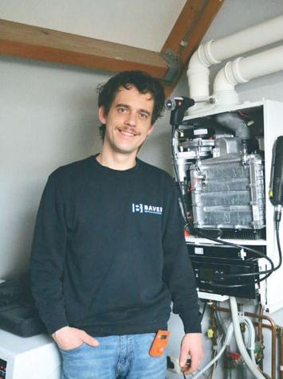

01 / VAKGEBIED
Cv-onderhoud & installatie
Een warme woning begint bij een goed werkende installatie. Voor onderhoud aan uw cv-ketel of het plaatsen van een nieuwe ketel.
Ontdek de mogelijkhedenVan cv-onderhoud tot een nieuwe installatie. Met Bart Verwoerd heeft u direct contact over het werk aan uw woning.

Onderhoud, een nieuwe installatie of werk aan uw dak. Uw vraag is het vertrekpunt.
Een warme woning begint bij een goed werkende installatie. Voor onderhoud aan uw cv-ketel of het plaatsen van een nieuwe ketel.
Ontdek de mogelijkhedenEen volgende stap in het verwarmen van uw woning? Bespreek uw bestaande installatie, woonwensen en plannen met Bart.
Ontdek de mogelijkhedenVan pvc-dakbedekking tot zinkwerk en dakgoten. Vertel wat er aan uw woning moet gebeuren en bespreek de mogelijkheden.
Ontdek de mogelijkhedenBaver Installatietechniek is het bedrijf van Bart Verwoerd uit Opheusden. Zijn specialisme: periodiek onderhoud aan cv-ketels. Daarnaast kunt u bij hem terecht voor installatiewerk, warmtepompen en dak- en zinkwerk.
Vertel Bart wat u nodig heeft. Dan begint het met een goed gesprek.